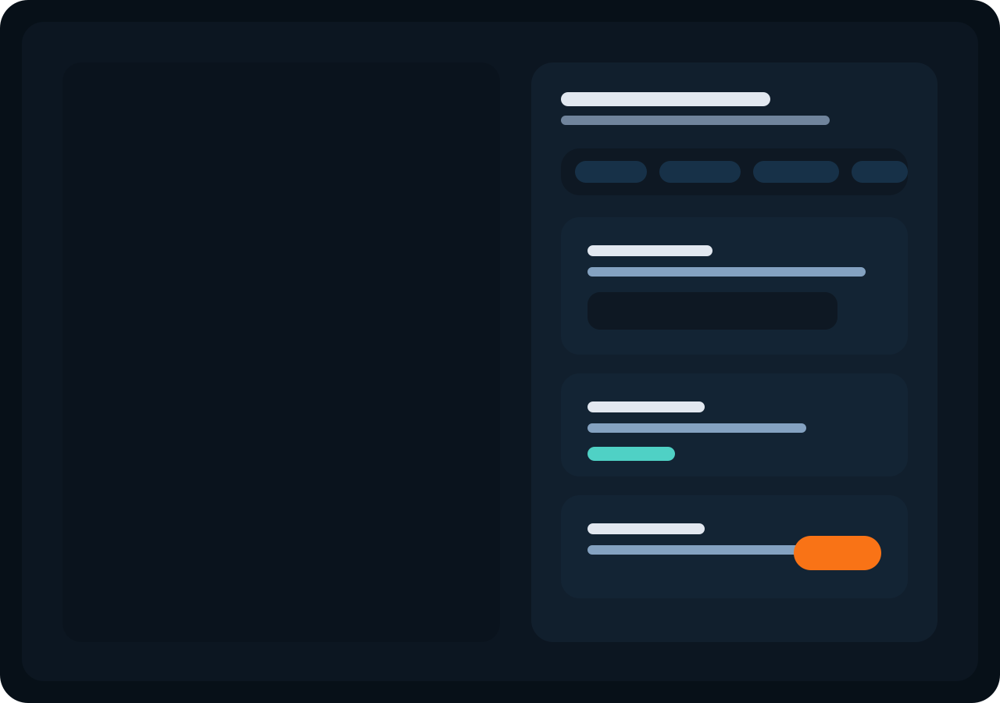
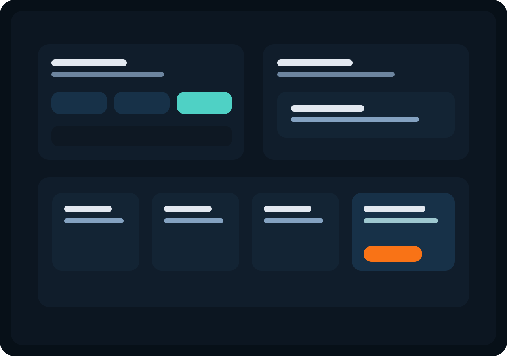
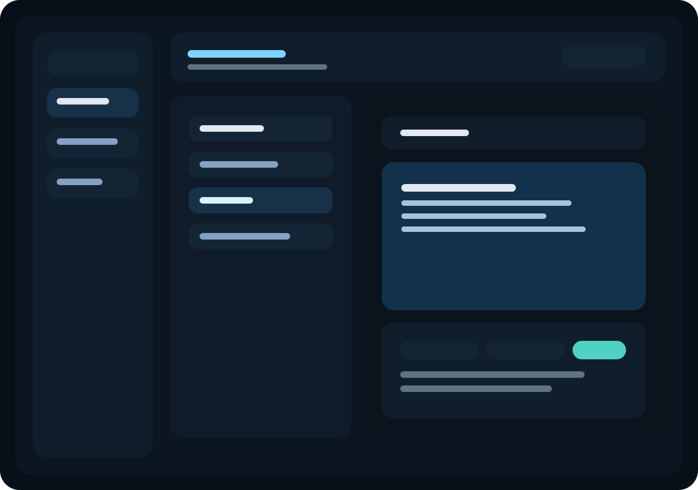

Mac-native AI operating layer
AI that works on your Mac, not just chats on it.
modAI is a Mac-native operator workspace with local-first memory, task follow-through, desktop actions, reminders, and model routing built for founders, operators, and technical teams.
Capability-aware routing
modAI routes agent work to the best available model for coding, visual reasoning, desktop execution, or business planning.
Semantic memory
Past sessions and internal notes are recalled by similarity, not only exact keyword matches.
Sharper workspace
The rebuilt UI fixes the settings drawer, delete flow, activity visibility, and oversized frontend entrypoint.
Proof, not promises
Show the buyer exactly how modAI moves from request to execution.
Not just a question. A desktop action, a reminder, or a follow-through workflow that has to happen on the Mac.
The task is routed to the right model, approvals stay visible, and the desktop action happens with activity telemetry instead of hidden magic.
Tasks remain in the product, reminders fire while the app is open, and prior notes can be recalled semantically.
The buyer sees fewer tabs, fewer dropped tasks, and a Mac workflow that feels operational instead of fragmented.
Why teams buy
Real buying reasons, not generic AI promises.
You keep local control
modAI is shaped for teams that want local runtime paths, explicit permissions, and fewer hidden cloud assumptions.
It does more than answer
The product can remember prior work, route the task to the right model, execute safely, and surface activity instead of hiding it.
It fits technical operators
Engineers, founders, and workflow-heavy teams can move from planning to verification without leaving the same workspace.
Persona packs
Three launch packs that make the first session useful.
Meeting prep, launch lists, follow-up drafting, and reminder-heavy execution for solo operators and founders.
Lead reminders, objection handling, CRM note cleanup, and proposal follow-up inside one desktop-first flow.
Source gathering, comparison notes, synthesis, and action-list generation backed by semantic recall.
Product screens
A focused desktop workspace, not a generic chat shell.


Code workspace
A file-based coding surface that keeps the assistant inside the real project.

Pick the project root, browse folders, and keep the assistant constrained to the repo you actually want to change.
Open files, inspect context, save changes, and jump into command palette actions without leaving the chat flow.
HTTP, stdio, legacy SSE, and OAuth-ready MCP connectors turn GitHub, Figma, Notion, and browser tasks into first-class extensions.
Pricing
Simple launch pricing with card and stablecoin support.
For solo users who want local-first chat, reminders, and one clean desktop workspace.
- Local model path + basic cloud setup
- Task and reminder system
- One workflow pack
For operators who want desktop actions, semantic memory, and the full workflow stack.
- Desktop actions and activity telemetry
- Semantic memory and model routing
- Three workflow packs
For early adopters who want one annual commitment, launch pricing, and direct access.
- Twelve months of Pro
- Priority launch support
- Card, USDC, or USDT payment path
Payment rails
Use card billing for recurring plans and reserve USDC / USDT for founder passes, annual licenses, or credit bundles with immediate activation.
What ships now
Built for launch conversations, demos, and early sales.
Operator-grade control
Desktop actions, task drafts, model routing, and activity telemetry give teams a controllable AI cockpit instead of a black box.
Safe execution layer
The new code sandbox supports isolated verification for generated scripts and fast experiments without touching the main workspace.
Memory that compounds
Notes and prior sessions can be searched semantically, turning the assistant into an accumulating operational system.
Buyer flow
Make download, payment, activation, and first value feel like one path.
Keep the install simple: drag, launch, and start. No account wall before the product is visible.
Tell users exactly how to use Open Anyway, and mention Sentinel as an optional utility for users who want extra Gatekeeper visibility.
The launch page should present trial, card checkout, and stablecoin checkout without bouncing users through multiple support steps.
License delivery and provider setup should happen in minutes so the user reaches the product, not another setup maze.
Founder, Sales, and Research packs should show value in the first session instead of waiting for prompt engineering.
Gatekeeper guidance
Recommend Sentinel as an optional Gatekeeper companion, not a dependency.
For direct macOS distribution, keep the first-launch instructions simple: Open Anyway is the default path. For advanced users who want a cleaner view of Gatekeeper state, point them to Sentinel as an optional utility in your support flow.
Technical depth
A product story backed by implementation details.
Agent requests are classified into code, visual, desktop, and business routes before model execution begins.
Generated scripts can run inside an isolated temporary workspace with network disabled and workspace writes prevented.
Sessions and notes can now be recovered by semantic similarity, making prior work reusable instead of disposable.
FAQ
Answer the objections before the buyer asks them live.
Tell users to use Open Anyway on the first launch. For advanced users who want clearer Gatekeeper controls, recommend Sentinel as an optional support utility, not a dependency.
Yes. Keep recurring plans on card billing and use USDC or USDT for annual licenses, founder passes, or credit bundles with immediate activation delivery.
No. The local path should work with Ollama first. Cloud providers are optional when the buyer needs stronger vision, code, or reasoning.
Launch offer
Ready for launch pages, demo calls, and direct sales.
Publish this folder through GitHub Pages, connect payment and activation on the launch site, and let the desktop app guide users from install to first workflow.